公寓·早晨 — POV主观 | 近景
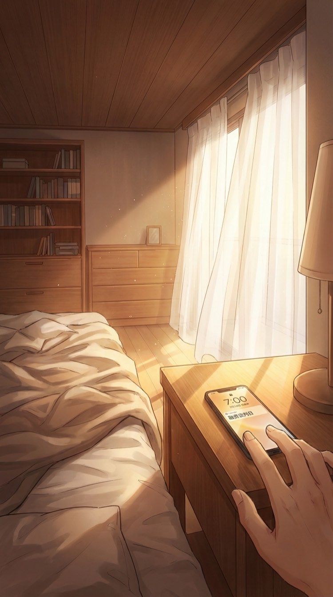
手机闹钟7:00准时炸响。日历提醒赫然在目——「B轮融资谈判日」。窗外阳光温柔得像是在嘲笑我即将面对的一切。
厨房 — 背影 | 中景
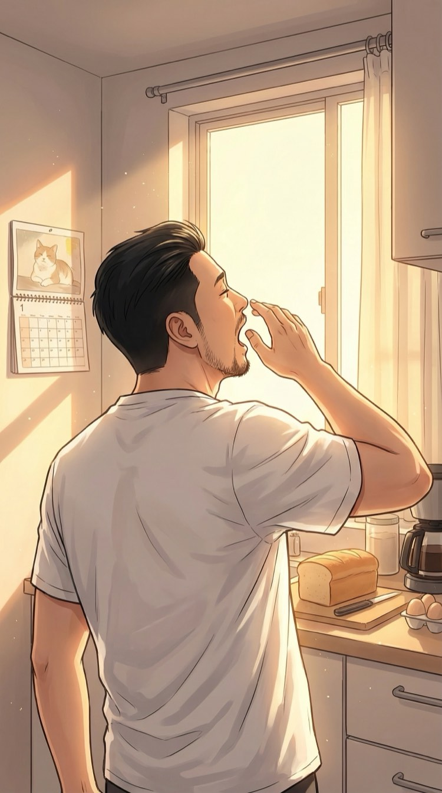
我拖着步子走进厨房，打了个能吞下整个公司的哈欠。今天是决定公司命运的日子，但我的身体显然还没收到这个通知。
卫生间 — 侧面 | 近景
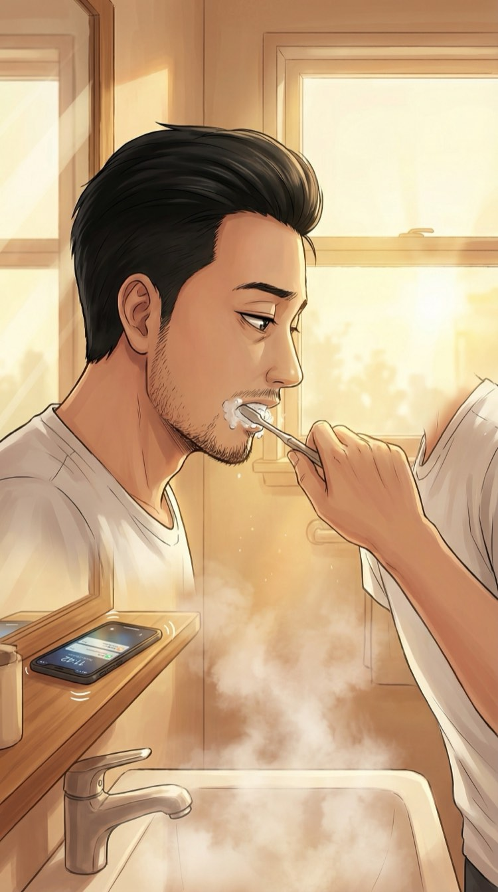
刷牙的时候手机在架子上疯狂震动。我眯着眼看了一下——17条未读消息。呵，这还没到公司呢。
玄关 — 3/4侧面 | 中景
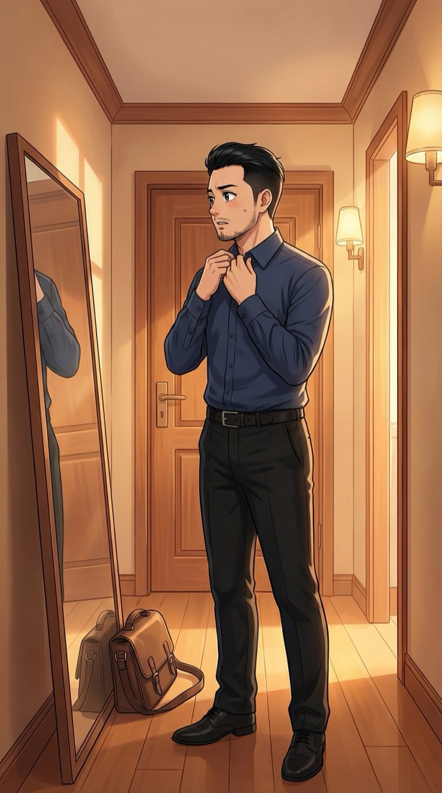
深蓝衬衫，黑西裤，皮鞋锃亮。镜子里的自己看起来像个正经人——至少看起来像。我整了整衣领，深吸一口气。今天，要么拿到五千万，要么……不，没有要么。
创业公司 — 全景 | 正面
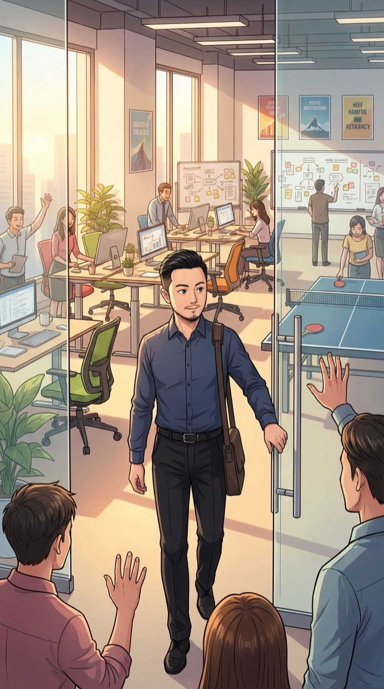
推开公司大门的那一刻，阳光和同事们的招呼一起涌过来。彩色椅子、站立办公桌、乒乓球台——这就是我们用梦想和即将到期的房租撑起来的帝国。
办公区 — 过肩 | 中景
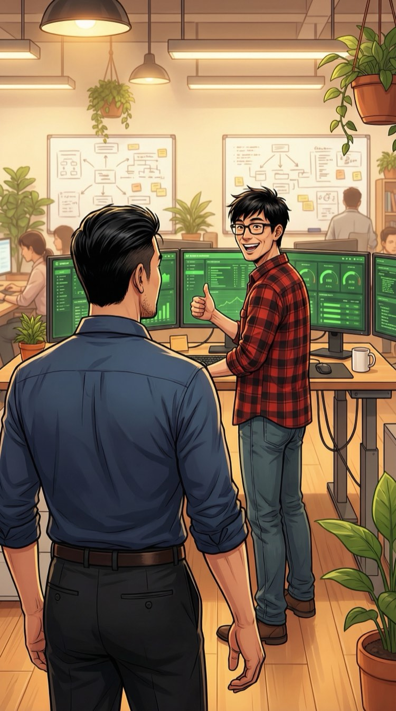
老陈从他那堆屏幕后面探出头，冲我竖了个大拇指。服务器状态全绿。我悬着的心放下了一半——至少技术不会在今天给我掉链子。至少我是这么以为的。
办公区 — 3/4 | 中近景
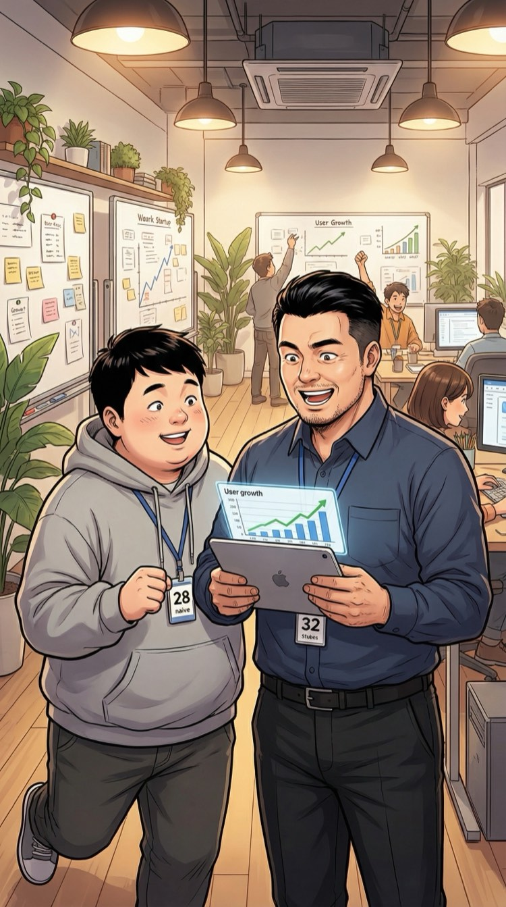
小赵举着平板朝我小跑过来，圆脸笑得像个得了满分的小学生。用户增长曲线——漂亮得像是PS过的。"朱哥你看！昨天又涨了两万！"他的工牌在胸前晃来晃去。
白板前 — POV主观 | 近景
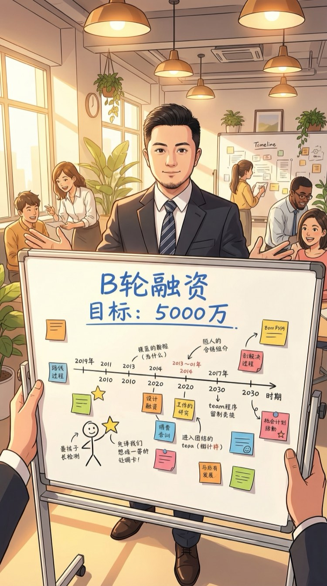
白板上写着「B轮融资 目标: 5000万」。下面是时间线、待办事项、还有不知道谁画的小人和星星。每张便利贴都是一个承诺。我盯着那个数字，五千万——够我们活三年，够从蛹变成蝶。
会议室 — 全景
明亮的玻璃会议室，落地窗外是整个城市的天际线。我站在长桌的一端，投影仪把我们的增长曲线投在墙上——一条令人心跳加速的上扬线。桌对面坐着三位投资人。居中的那位——林薇，灰色套装，珍珠耳环，眼神像手术刀。
会议室 — 手部特写
我的手在空中比划着数据——用户留存、日活增长、单位经济模型。每个手势都经过了反复练习。我知道这些数字够硬，够亮。关键是，她信不信。
会议室 — 过肩→林薇 | 中景
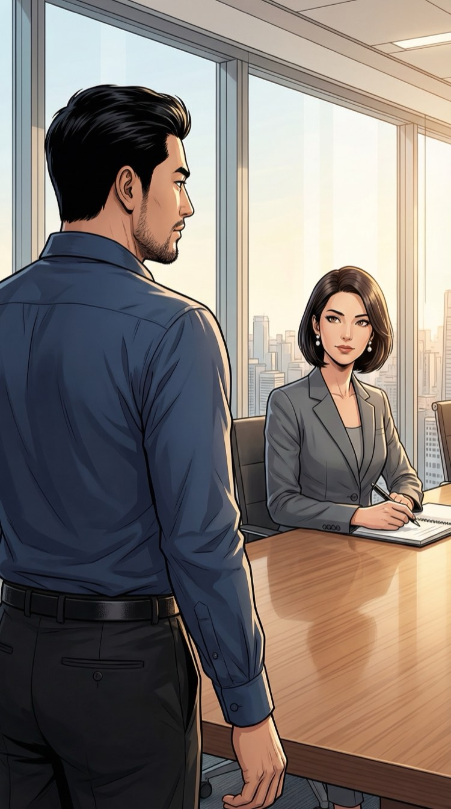
林薇坐在对面，笔尖抵着笔记本，一个字也没写。她的眼神在拆解我说的每一个字，像是在做尸检——寻找死因，在尸体还活着的时候。这个女人，投了三家独角兽，杀死了更多。
会议室 — 侧面 | 双人中景
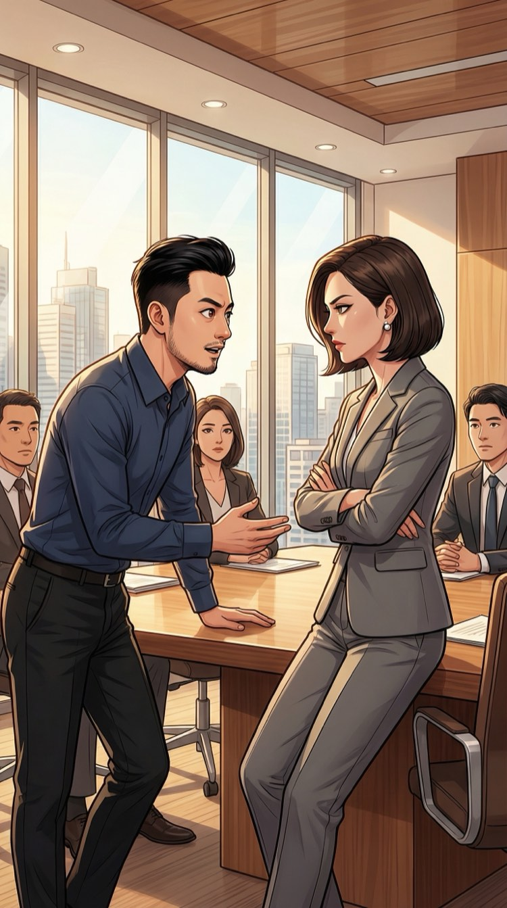
谈判进入拉锯。我前倾身子，她后靠交叉手臂。经典的进攻-防守姿态。估值、条款、对赌——每个词都是一颗棋子。我能感觉到额头在微微出汗，但不能擦。
会议室 — POV主观 | 近景
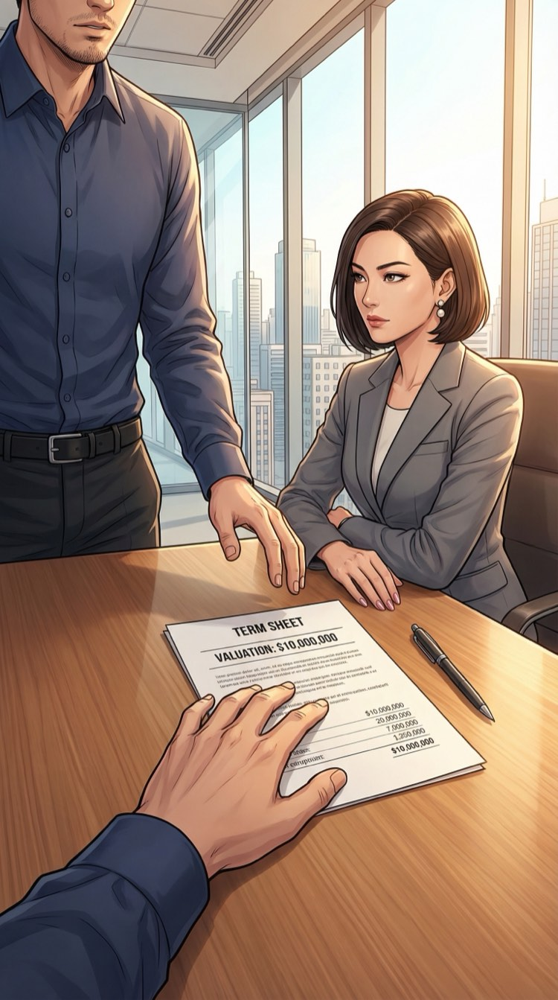
投资意向书推到面前。白纸黑字，数字让人心跳加速。旁边放着一支笔。林薇保养得当的手指搭在文件边缘。我的手悬在半空——
**【决策点一】签还是不签？条件比预期苛刻，但机会可能只有这一次。**
我选择了……再谈谈。
会议室 — 中景
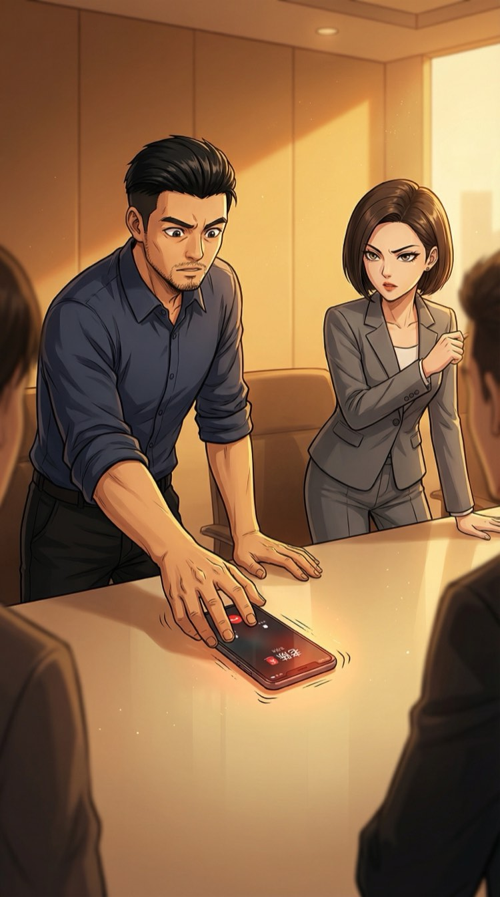
就在我准备开口还价的时候，桌上的手机震了。屏幕亮起——老陈的来电，前缀是一个红色警报emoji。所有人的目光都落在那台手机上。林薇的眉毛微微挑了一下。我知道，在投资人面前接电话是大忌。但老陈从不在这种时候打电话。
走廊 — 3/4侧面 | 近景
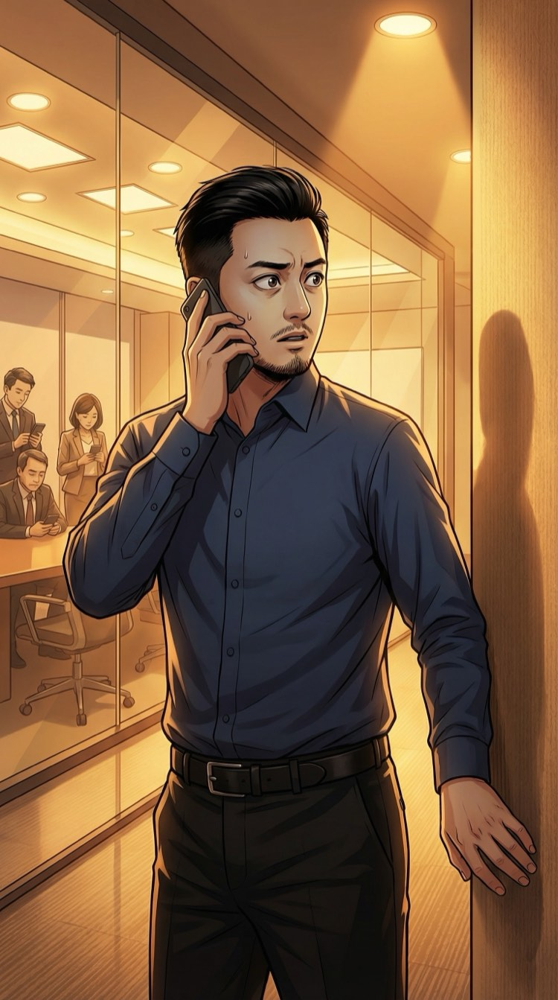
"服务器被攻破了。"老陈的声音在耳机里像是从另一个世界传来。我的脸在一秒内失去了所有血色。走廊暖黄色的灯光照在我身上，透过玻璃墙，我看到里面的投资人开始看自己的手机——消息已经传开了。
技术区 — 全景 | 正面
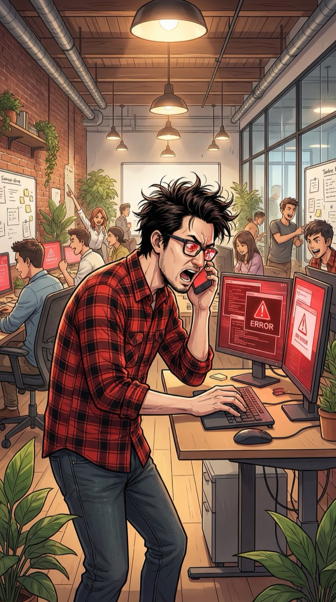
老陈的世界已经沦陷。三台显示器全是红色警报，他一手敲键盘一手举着电话，头发乱得像被服务器爆炸波及。他的黑框眼镜映着满屏的Error——我建造的技术堡垒，正在实时坍塌。
走廊→会议室 — POV主观 | 远景
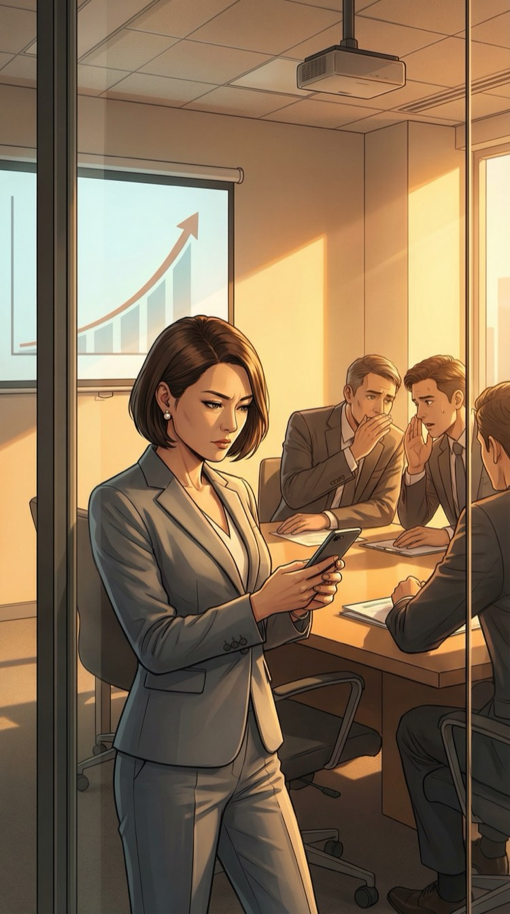
透过走廊的玻璃墙看进去——林薇正低头看手机，脸上的表情从"客气"切换到"铁面"。投影仪上还放着我刚才的增长曲线，那条漂亮的上扬线现在看起来像一个绝妙的讽刺。一切都在同时崩塌。
办公区·小赵工位 — 过肩 | 中景
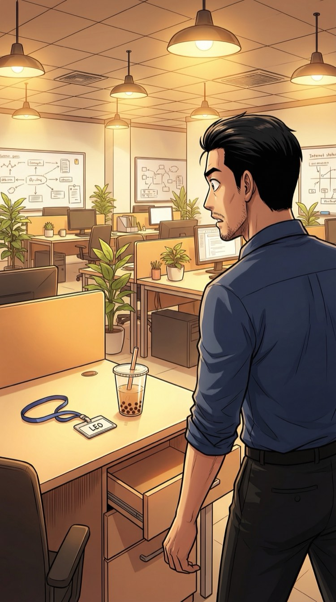
小赵的工位空了。不是"出去买咖啡"的空，是"个人物品全部清除"的空——抽屉大开，私人物品消失，只留下公司工牌和一杯没喝完的珍珠奶茶。奶茶还是温的。他跑得比我接到噩耗还快。
小赵工位 — 特写
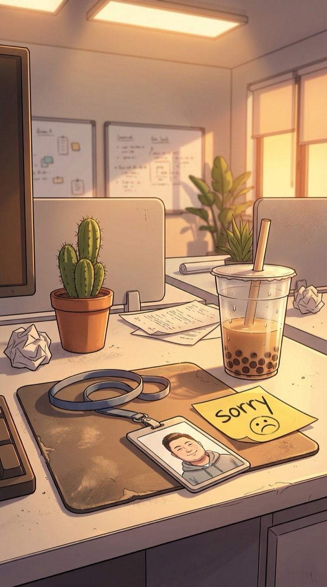
工牌上印着小赵圆嘟嘟的笑脸，照片里他看起来天真无害。旁边一张便签纸，歪歪扭扭写着"sorry"加一个悲伤的小表情。还有他养了三个月的仙人掌——他连仙人掌都不要了。奶茶的珍珠沉在杯底，像我的心。
办公区 — 3/4侧面 | 近景
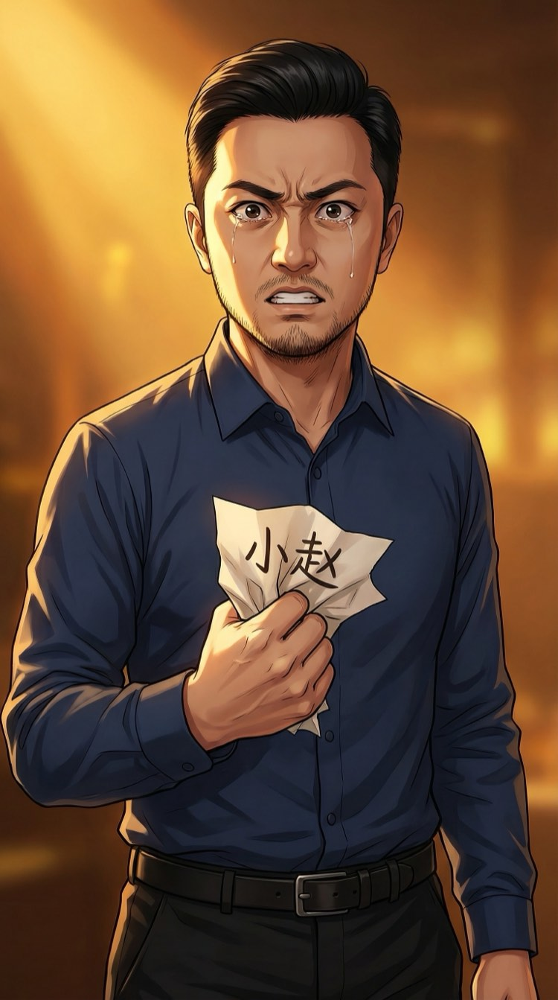
愤怒从胸腔涌上来。我咬紧了牙关，鼻翼翕动，眼睛发亮——不是感动的那种亮，是被信任的人捅刀子之后的那种亮。手里攥着那张"sorry"便签，纸在我掌心里变成一团。我信他。我真的信他。
办公区 — 背影 | 全景
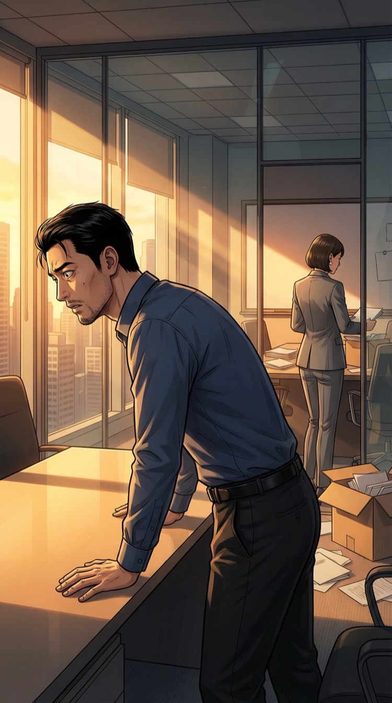
我撑在小赵空荡荡的桌子上，肩膀微微前倾。身后的玻璃墙另一侧，林薇正在收拾文件。下午的阳光依旧温暖——阳光不会因为你的世界崩塌就暗下来。这是最残忍的部分。
会议室 — 中景
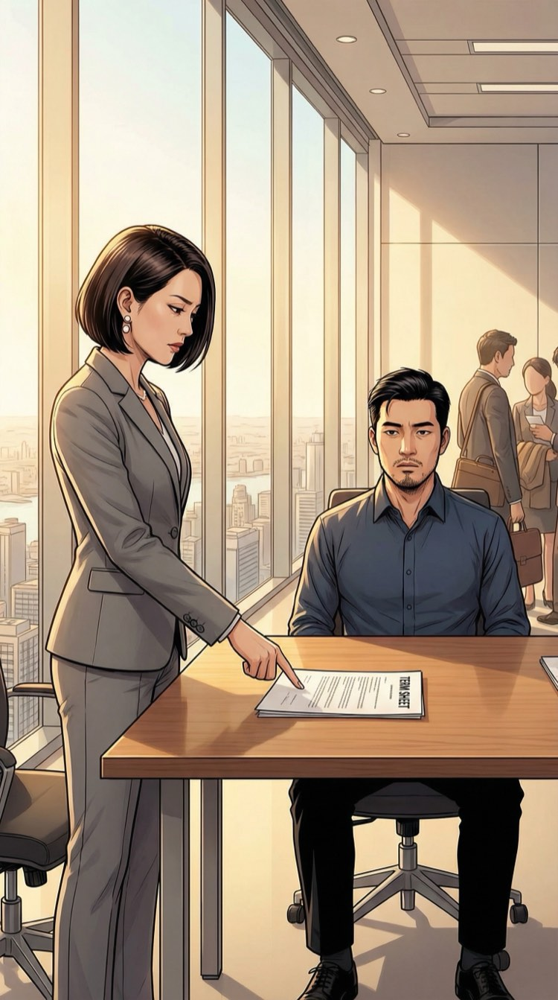
回到会议室。林薇站起身，用一根手指把投资意向书滑回我面前。那个动作优雅而致命。"朱总，我想我们需要重新评估。"其他投资人已经在收包了。我坐在椅子里，看着那张纸滑过来——就像看着自己的判决书。
会议室 — 侧面 | 中景
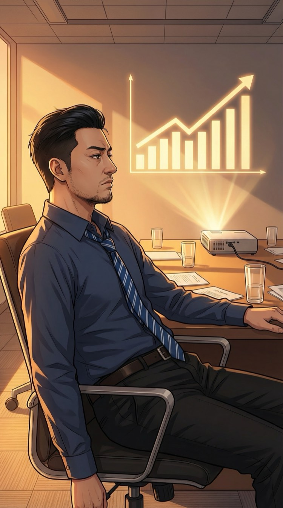
空荡荡的会议室里只剩我一个人。领带松了，袖子挽了，投影仪还在忠实地放着那张增长曲线——满屋子的乐观主义幽灵。水杯散落，纸张凌乱。窗外夕阳把一切镀成金色。我像是被遗忘在舞台上的最后一个演员。
办公桌 — POV主观 | 近景
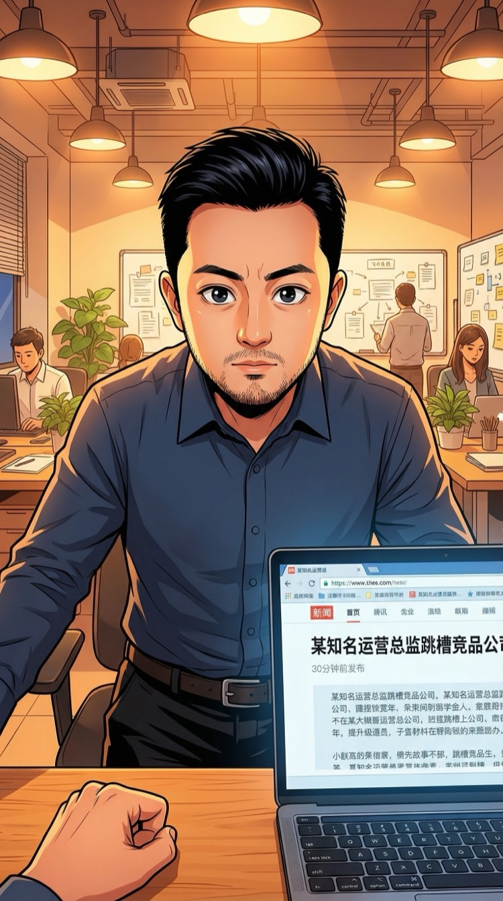
刷到一条新闻："某知名运营总监跳槽竞品公司"——配图是小赵灿烂的笑脸。发布时间：三十分钟前。一切都是计划好的——入侵、叛逃、同步进行。有人在猎杀我的公司，而小赵是第一块倒下的多米诺骨牌。拳头在桌上攥紧。
办公区 — 过肩 | 中景
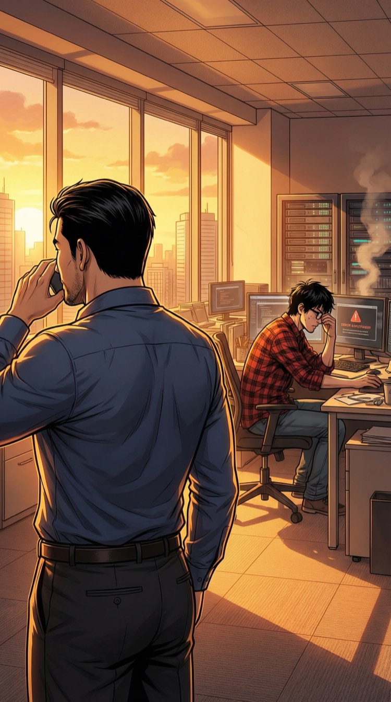
"老陈，还能撑住吗？"我打电话给对面正在和服务器搏斗的男人。隔着整个办公区，我能看到他枯瘦的身影还在屏幕前战斗。窗外夕阳如血，把整个办公室染成金色。两个男人，一个在救服务器，一个在救公司，两条战线同时在输。
办公室·深夜 — 全景
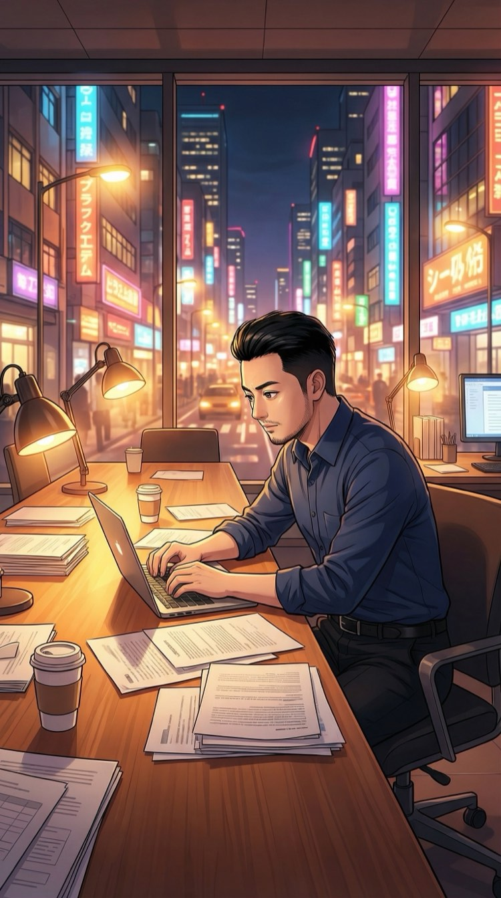
夜幕降临，但办公室并不暗——城市灯火透过窗户洒进来，暖黄色台灯亮着，显示器的光晕像电子篝火。我一个人坐在会议桌前，面前摊满了文件和便签。咖啡杯已经空了三个。思考，复盘，一遍又一遍。
白板前 — 手部特写
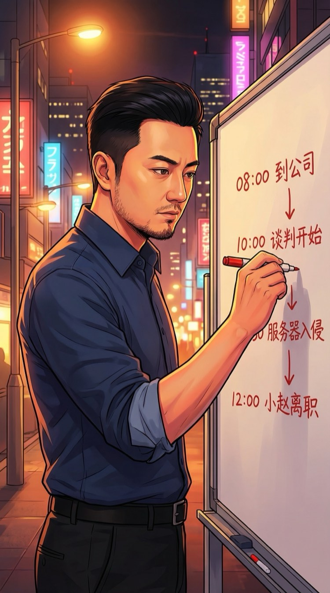
红色马克笔在白板上画出时间线。08:00到公司→10:00谈判→11:30服务器入侵→12:00小赵叛逃→14:00林薇撤资。箭头连接着每个事件——太巧了。时间卡得太精准了。这不是巧合，这是一场有组织的绞杀。
白板前 — 3/4侧面 | 近景
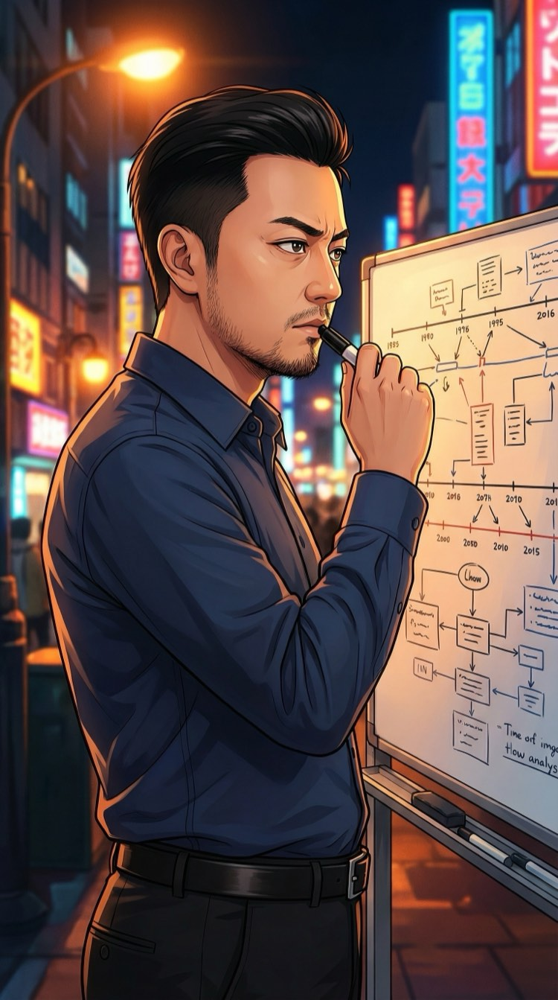
马克笔帽咬在嘴里，眼睛眯起来。白板上的时间线在我面前像一幅作战地图。我开始看到模式了——那种从代码里debug时突然发现规律的感觉。
**【决策点二】是认栽认输，还是从废墟中寻找反击的线索？**
我从不认输。
办公室·深夜 — POV主观 | 特写
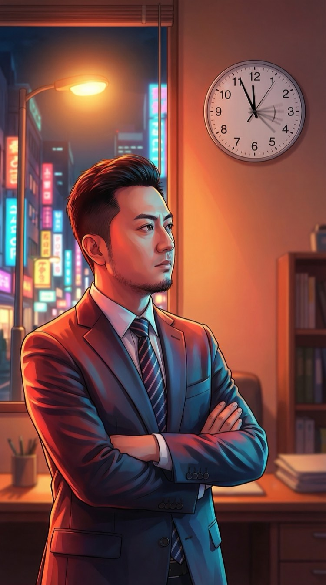
墙上的钟指向11:58。秒针在一格一格地走，但每一下似乎都比上一下慢。嗒……嗒………嗒…………安静得能听到自己的心跳。空气变得黏稠。一种奇怪的预感攫住了我——有什么事情要发生了。
办公室 — 全景 | 正面
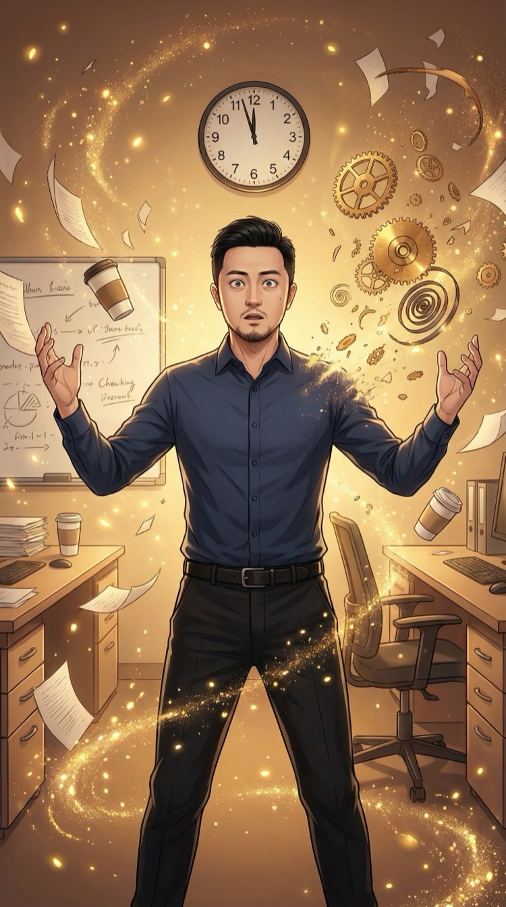
午夜钟声敲响的那一刻，世界碎了。桌上的文件、咖啡杯、便签纸——所有东西开始分解成金色的光粒子，像萤火虫一样在空中飘舞。我惊恐地站起来，双手本能地护在身前。金色粒子包围了我，温暖的，美丽的，令人窒息的。
时间重置中 — 近景·面部
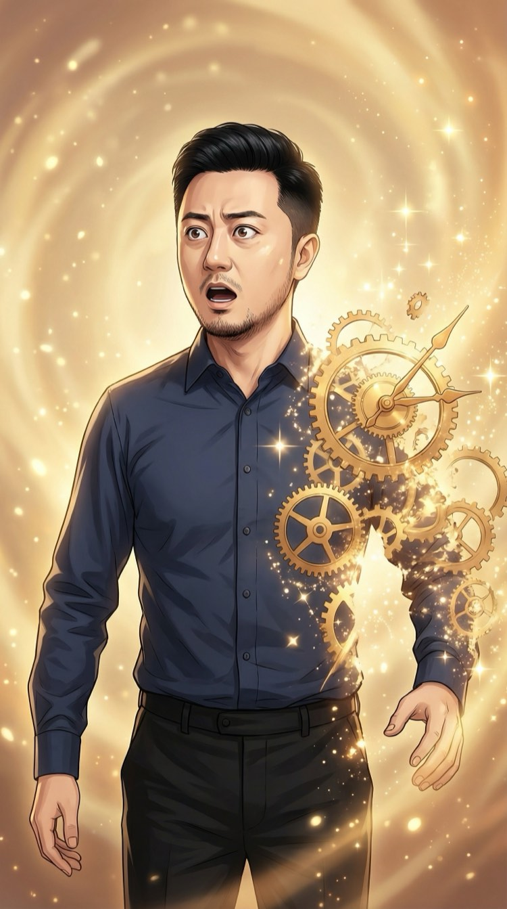
半边身体已经化成了金色碎片。我低头看着自己的手指一粒一粒地溶解，像是像素在被删除。恐惧和美感同时攫住了我——我正在消失，但消失的方式竟然如此……好看？这大概是最荒谬的遗言了。
公寓·早晨 — POV主观 | 近景
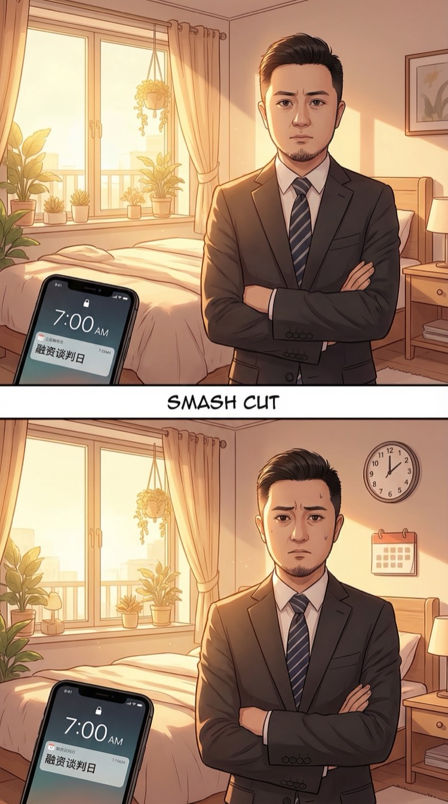
手机闹钟。7:00 AM。日历提醒——「B轮融资谈判日」。
同样的阳光，同样的窗帘，同样的一切。
我——回来了？
卧室 — 3/4侧面 | 近景
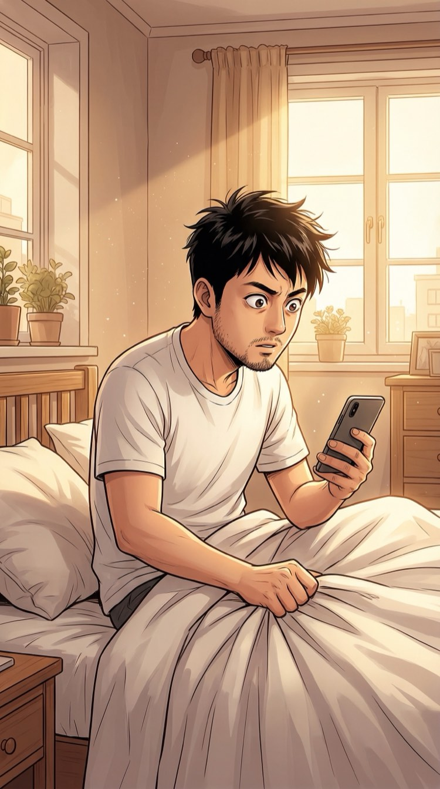
我猛地坐起来。白T恤，头发乱糟糟——但眼睛清醒得不像话。心脏在胸腔里擂鼓。我记得。我全都记得。服务器入侵、小赵叛逃、林薇撤资——全部。
**【决策点三】这是梦吗？还是我真的回到了今天早上？**
我抓起手机开始验证。
卧室 — POV主观 | 特写
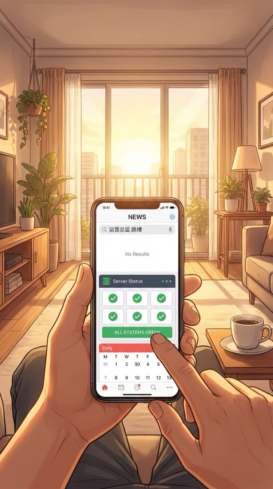
手指在屏幕上飞速滑动。搜索"运营总监跳槽"——没有结果。检查服务器状态——全绿。日期确认——同一天。一切都回到了原点。
不是梦。不是错觉。我真的拿到了重来的机会。
嘴角不自觉地翘起来。
厨房 — 侧面 | 中景
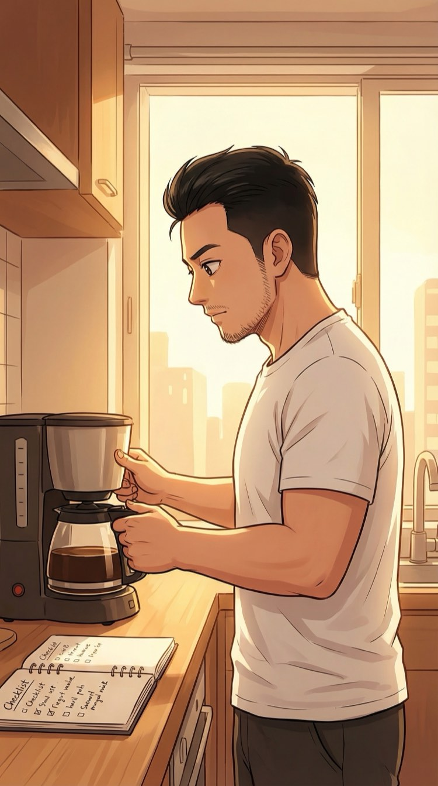
同一个厨房，同一束阳光——但这次我没有打哈欠。咖啡机旁摊着一本笔记本，上面是我刚写的作战计划。第一条：确认小赵的异动。第二条：提前加固服务器。第三条：准备林薇的替代方案。咖啡还在滴漏，但我已经是另一个人了。
玄关 — 背影 | 中景
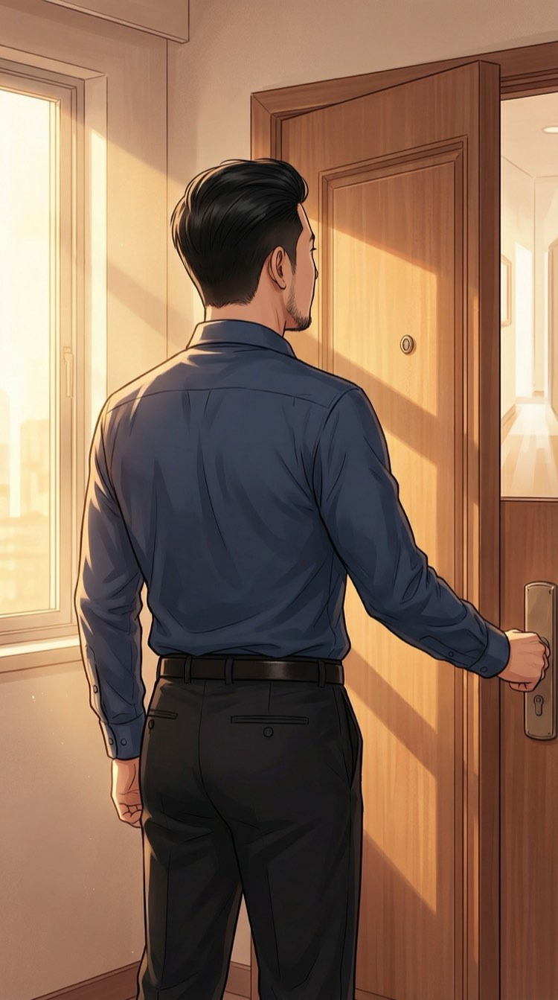
同样的深蓝衬衫，同样的黑西裤，同样的门把手。但姿态完全不同——肩膀打开，下巴微抬，像一个明知道陷阱在哪里的将军走向战场。
**【决策点四】同样的一天，同样的人，但这次我知道剧本了。该怎么重写结局？**
门开了。
公司入口 — 全景
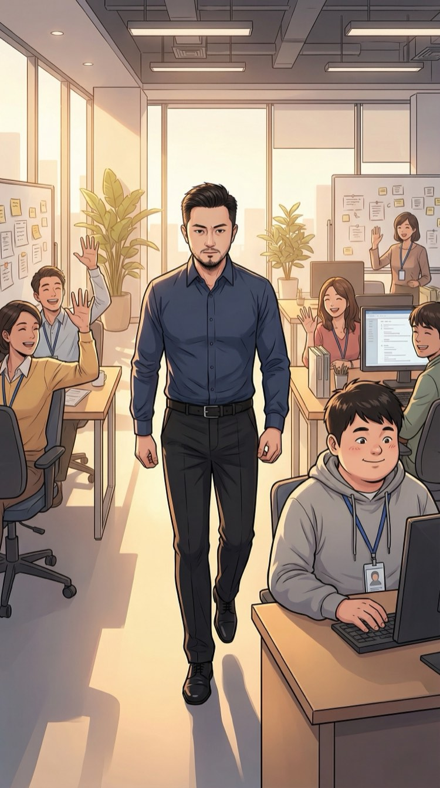
推门走进公司。一切都一模一样——同样的同事挥手，同样的阳光，同样的乒乓球台。但我没有驻足寒暄。我的视线直直穿过人群，锁定目标——小赵的工位。他在那里，圆脸笑嘻嘻的，工牌挂在胸前。一切还没发生。
小赵工位 — 过肩→小赵 | 中景
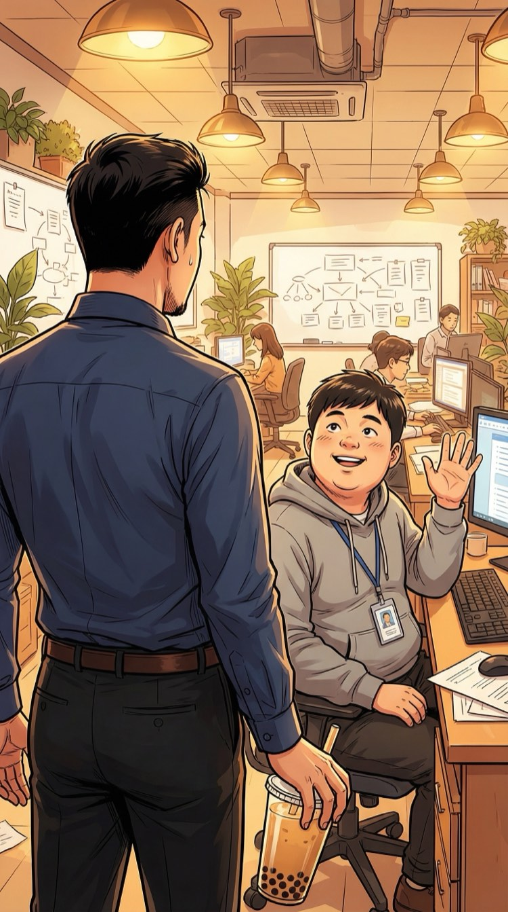
"朱哥早！"小赵笑着挥手，珍珠奶茶举在手里。和昨天——或者说"上一轮"——一模一样的笑容。这个笑容在八小时后会出现在竞品公司的新闻稿上。他不知道我知道。
我微笑着点了点头。不露声色。棋局从这里开始。
会议室 — POV主观 | 近景
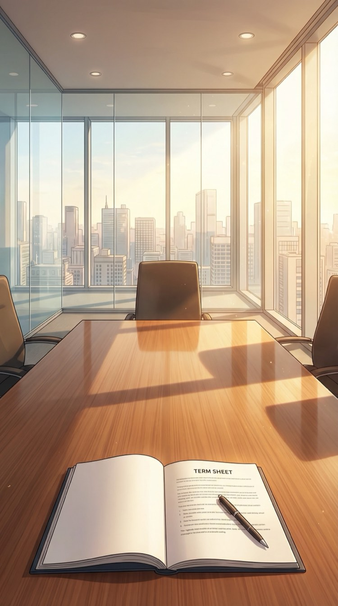
空荡荡的会议室。林薇的椅子还没有人坐。投资意向书安静地躺在桌上，旁边那支笔还在。同样的文件，同样的数字——但这次我知道她会在什么时候翻脸，知道她手机会在什么时候响。
知识就是权力。而我拥有一整天的未来。
双场景拼接 — 全景 | 对角分割
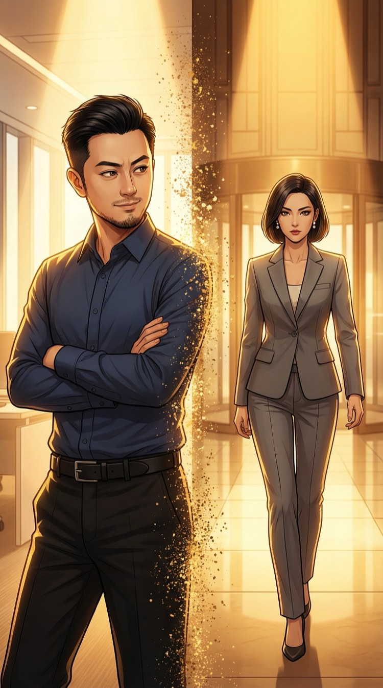
画面一分为二——左边是我站在明亮的办公室里，双臂交叉，嘴角带着猎人的微笑。金色光粒子组成的边界线将画面分开。右边是林薇走进大楼的身影，灰色套装，珍珠耳环，自信从容——她不知道，这一次，猎人和猎物的身份对调了。
**第一章完**
*午夜钟声再次敲响时，你会选择揭穿叛徒，还是利用他？*